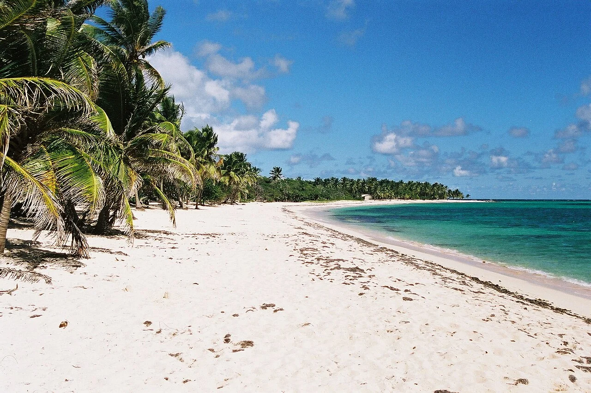

Plage de la Feuillère — Marie-Galante
Capesterre, Marie-Galante, Guadeloupe · kitesurf, snorkeling, baignade

Plage de sable fin et d’eau turquoise à Capesterre, à Marie-Galante. Selon le Comité du tourisme des Îles de Guadeloupe, les alizés constants en font un spot de kitesurf réputé, et les herbiers marins abritent poissons colorés et tortues, à découvrir au masque et au tuba. On y arrive en voiture depuis le bourg, et un parking gratuit borde la plage. Décembre et janvier tombent dans la saison sèche (de décembre à mai), avec une mer à 27 °C.
- Lieu
- Capesterre, Marie-Galante, Guadeloupe
- Niveau
- Variable selon les conditions
- Activités
- kitesurf, snorkeling, baignade
- Type d'eau
- Mer / océan
- Coordonnées
- 15.89, -61.22 (position approximative du secteur)
Dangers à connaître
- Plage non surveillée : reste vigilant, surtout avec des enfants ou des nageurs moins expérimentés.
- Spot de kitesurf par alizés constants : garde tes distances avec les ailes.
- Les herbiers marins sont fragiles : ne les piétine pas.
- Des sargasses s’échouent par moments en Guadeloupe : en mai 2026, la préfecture a lancé une veille sanitaire. Renseigne-toi avant de partir.
Le conseil d'Ocean Buddy
Baigne-toi près du rivage, surtout par mer calme, et regarde les herbiers depuis la surface plutôt que de les piétiner.
Ouvrir dans Ocean Buddy Télécharger sur l'App Store
Source : Fiche Ocean Buddy · décembre 2026 · d’après le Comité du tourisme des Îles de Guadeloupe et L’Info Durable · à vérifier localement.